| ねこっぷ セット: 0〜30 | |||||||||||||||||||
| 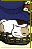 | 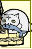 | 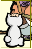 | 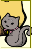 | 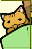 | 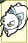 | 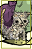 | 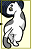 | 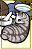 | 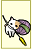 | 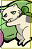 | 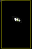 | 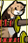 | 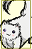 | ||||||
| 0 | 1 | 2 | 3 | 4 | 5 | 6 | 7 | 8 | 9 | 10 | 11 | 12 | 13 | 14 | 15 | 16 | 17 | 18 | 19 |
| 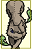 | 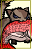 | 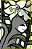 | 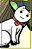 | 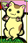 | 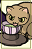 | 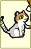 | |||||||||||||
| 20 | 21 | 22 | 23 | 24 | 25 | 26 | 27 | 28 | 29 | 30 | |||||||||
| azuma セット: 31〜74 | |||||||||||||||||||
| mtmt セット: 75〜128 | |||||||||||||||||||
| shirone セット: 129〜171 | |||||||||||||||||||
| 花のお江戸 セット: 172〜210 | |||||||||||||||||||
| 壱番街 セット: 211〜255 | |||||||||||||||||||
| かりんか セット: 256〜298 | |||||||||||||||||||
| メトロポリス セット: 299〜373 | |||||||||||||||||||
| xx セット: 374〜446 | |||||||||||||||||||
| ALL: 0〜446 | |||||||||||||||||||